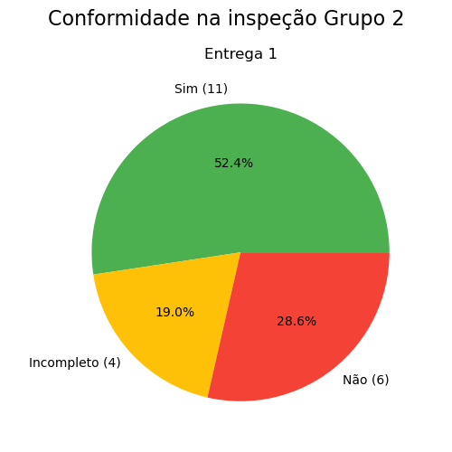
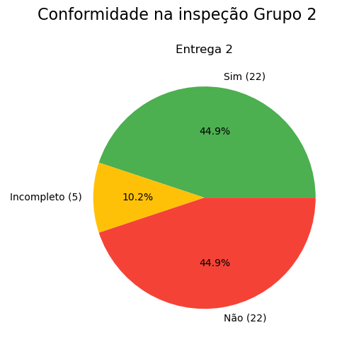
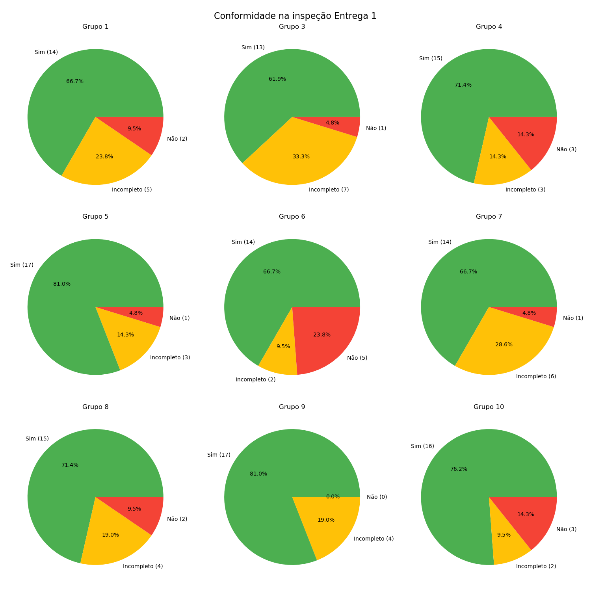
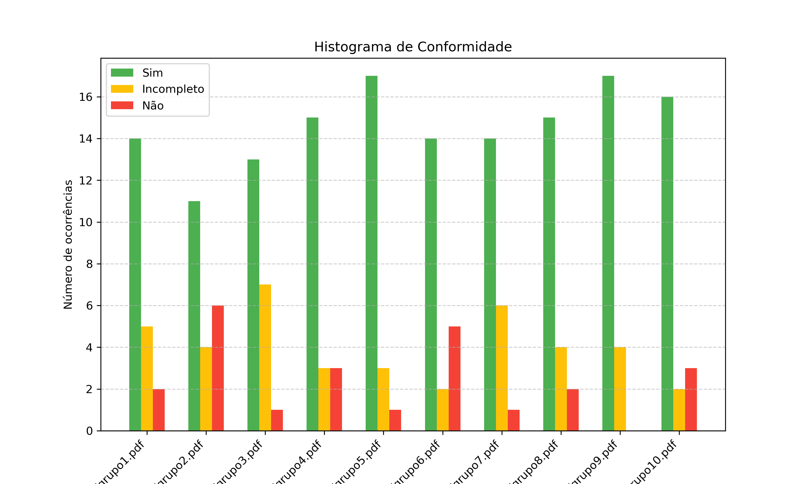
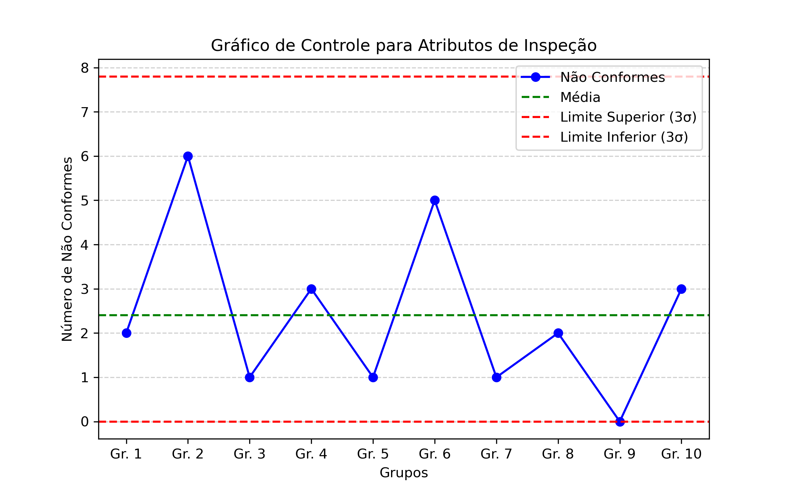
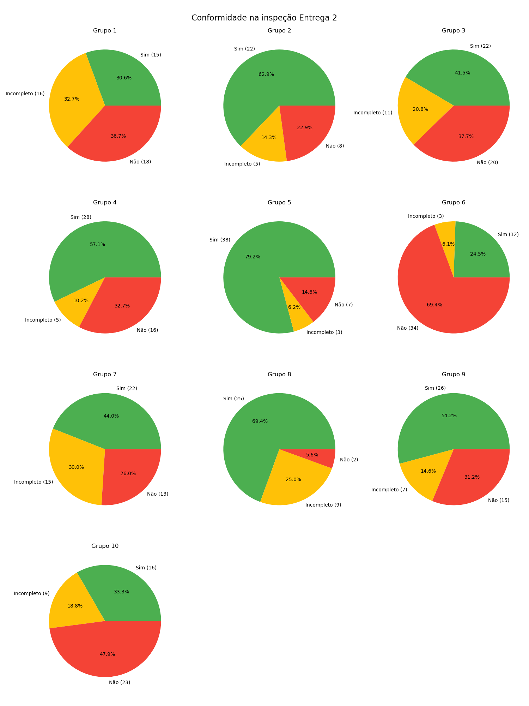
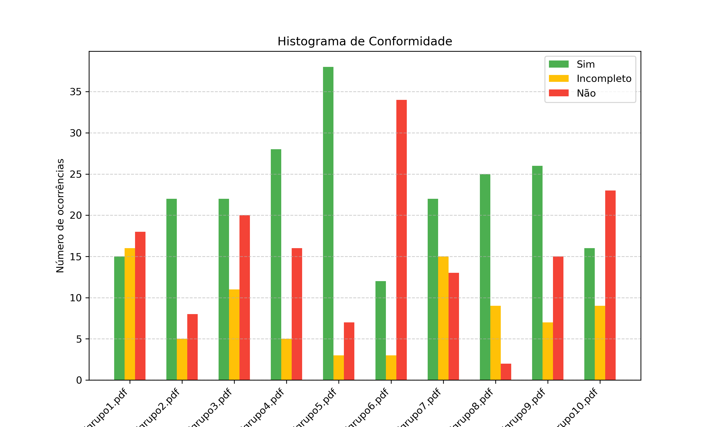
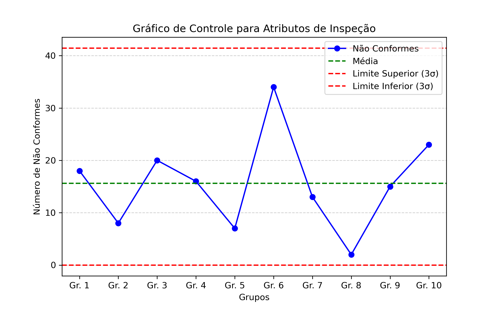

Introdução
No processo de entregas da disciplina de Requistos de Software (2025.1) - Turma 03 - do docente Andre Barros, além do desenvolvimento de artefatos das etapas envolvendo métodos e práticas de requistos, também há entregas de listas de verificação e inspeções. Assim, o grupo X, por um lado, inspeciona a sí mesmo e o grupo X+1, por outro lado, é inspecionado pelo grupo X-1 e, também, por monitores da matéria.
Essa prática formalizada inicialmente por Fagan (2002), contribui para redução ou, em alguns casos, mitigação de erros vinculados ao processo, o que condiz com um dos princípios essenciais da qualidade em engenharia de software denominada verificação. De qualquer modo, no contexto do nosso grupo (2), além de inspecionarmos o grupo 3 e a nós mesmos, o monitor Douglas Alves inspeciona e verifica a conformidade dos artefatos produzidos pelo nosso grupo.
Metodologia
O documento irá possuir o anexo das listas de inspeção do(s) monitor(es) com ênfase nas inspeções do nosso grupo (2) e, em seguida, uma síntese dos principais pontos e aspectos levantados na inspeção do monitor. Além disso, também irá ser retornado a estatística de proporção de elementos em conformidade e em não conformidade em cada entrega. Assim, é possível dimensionar e esclarecer o andamento do projeto e das entregas pela equipe, tal como a qualidade dos artefatos produzidos no processo. Por dim, será disponibilizado em anexo a inspeção de outros grupos da disciplina em mérito de comparação e maior compreensão.
Inspeções do monitores
Inspeção do Grupo 2
Para a inspeção do nosso grupo, o foco é fazer a síntese geral dos principais pontos e aspectos tratados no documento de inspeção do monitor responsável pelo nosso grupos - no caso é o Douglas Alves -, listar os elementos que não estão como "conformes" e retornar a proporção desses elementos.
Entrega 1
Referência |
autoria |
|---|---|
| Inspeção nosso Grupo | Douglas Alves |
Síntese da Inspeção
Ao analisar o gráfico evidenciado na figura 2, percebe-se que a maior parte (52,4 %) dos artefatos forama avaliados como "conforme" ("sim") com os elementos de verificação dos monitores. Entretanto, o intuito do processo de inspeção é justamente aumentar essa porcentagem para 100% ou proximo disso. Para os elementos "parcialmente conformes" (ou "incompletos"), apesar conterem aspectos em conformidade, não cumpre a todas as nunaces do item avaliado, mesmo que na prática os incompletos influencie positivamente na conformidade, ainda deixa a desejar, necessitando de uma revisão; o mesmo vale para os elementos em inconformidade, esses que devem ser corrigidos.
Agora, analisando os resultados presentes na figura 2 e comparando com os resultados da figura 3, nota-se que o presente grupo foi o que obteve menor conformidade. A média geral de elementos em conformidade ("sim") dos grupos foi de aproximadamente 13 itens, no qual os grupos 5 e 9 obtiveram maior conformidade, com 81% de conformidade (17 itens "sim") para ambos, e o grupo 2 com menor conformidade, cerca de 52% (11 itens "sim"). Entretanto, é importante salientar que há uma certa variação na avaliação entre os monitores, já que pode envolver algumas diferenças de interpretação de conformidade dos itens, podendo dois monitores avaliarem um mesmo elemento não atendido, em dois grupos em situações parecidas de maneiras diferentes. Isso pode ser visto, por exemplo, na inspeção da entrega 1 do grupo 3, o qual há itens que possuem a classificação como "sim", mas considerações de melhoria, o que poderia ser enquadrado como "incompleto" por outros monitores.
Assim, percebe-se que com uma diferença de 2 itens em conformidade ("sim") para a média geral e 6 itens dos grupos de maior conformidade (aproximadamente 54% a menos), faz-se necessário analisar os erros e inconformidades, ajustá-las e revisá-las para entregas futuras, englobando as sugestões dos professores e monitores, tal como as inconformidades percebidas também por outros grupos.
Principais Conformidades
- Página com integrantes e cronograma geral completo.
- Histórico de versão padronizado e registros de reuniões documentados.
- Vídeo de apresentação corretamente disponibilizado.
Principais Inconsistências
- Falta de período de revisão no cronograma.
- Ausência da cópia do termo de uso do aplicativo (apenas link).
- Algumas tabelas e imagens sem legendas e referências bibliográficas.
Recomendações
- Melhorar a estrutura dos artefatos, incluindo introduções e referências.
- Adicionar cópia do termo de uso para evitar mudanças futuras.
- Complementar a lista de verificação com foto da fonte do item analisado.
Considerações
Nessa etapa, a inspeção foi executada no contexto do aplicativo Guardiões da Saúde. Contúdo, devido ao confilito com um grupo que executou o mesmo projeto a 10 turmas atrás, houve a necessidade de migrar para outro projeto. Assim, para o atual projeto - Deepseek -, vale as recomendações do monitor e os ajustes propostos e, no contexto geral, as inconsistências antes postas, também valem de observação para o ajuste dessa etapa para o novo projeto, tomando o devido cuidado em referenciar o novo Rich Picture, atualização em relação ao cronograma atualizado e ferramentas utilizadas.
Listagem dos elementos que não estão conformes da Inspeção da entrega 1
- Período de gravação da apresentação (Incompleto - Apenas da Etapa 1).
- Período de revisão/ajustes dos artefatos devido considerações dos monitores/professores (Não).
- Cronograma prevê cada uma das Técnicas de priorização de requisitos (Não).
- Motivação e critérios para escolha do aplicativo (Não).
- Cópia do Termo de Uso do aplicativo (Incompleto - Apenas link, não cópia).
- Referências bibliográficas e/ou bibliografia em todos os artefatos (Não).
- Tabelas e imagens com legenda e fonte, chamadas dentro do texto (Não).
- Introdução dos artefatos (Incompleto).
- Cronograma executado com responsáveis e datas das atividades (Não).
- Lista de verificação com referência bibliográfica da fonte e foto do texto da referência (Incompleto).
Figura 1: Gráfico da inspeção grupo 2 - Entrega 1

Autor: Mateus
Fonte: Inspeções da entrega 1 - Grupos 2
Entrega 2
Referência |
autoria |
|---|---|
| Inspeção nosso Grupo | Douglas Alves |
Síntese da Inspeção
Na entrega 2, ao avaliar a inspeção do nosso grupo (2) na Figura 2, percebe-se que houve conformidade em 22 itens, maior que a entrega anterior (11 itens) em valores absolutos. Assim, o analisar a proporção dos itens na entrega 2, essa quantidade se expressou como 44,9% de conformidade ("sim"), 10,2% de "incompletos" e 44,9% de inconformes ("não"), o que significa redução de 14,3% de itens conformes e aumento de 57% de itens inconformes; tal padrão de declínio também foi encontrado nos demais grupos, como pode ser visto no comparativo do gráficos da entrega 1 e da entrega 2.
Aprofudando na questão antes posta, para verificar o que pode ter causado isso, foi encontrado 14 itens (item) da técnica de personas na lista de inspeção. No entanto, a utilização dessa técnica não era obrigatória para a entrega e era somente aplicável a grupos que utilizaram a mesma. Nesse sentido, como o nosso grupo (2) não utilizou a técnica e, mesmo assim, foi avaliado os itens, para adequada correção da taxa de conformidade em tal entrega pelo nosso grupo, recalcula-se considerando o decrescimo de 14 itens do total de itens inconformes ("não"). Por consequência, a nova proporção atingida pelo nosso grupo dos itens foi: cerca de 62,9% conformidade (22 itens "sim"), 14,3% parcial conformidade (5 itens "incompleto") e 22,9% de inconformidade (8 itens "não"). Ou seja, efetivamente, nosso grupo alcançou 20% de acrescimo nos itens em conformidade, o que indica um aspecto positivo entre a entrega 1 e entrega 2, aindam mais em termos de itens conformes em valor absoluto.
Enfim, Pode ser percebido que entre a entrega 1 e 2, o grupo 2 conseguiu uma melhora substancial, mas ainda com espaço para aprimoramento e melhoria. Além disso, é importante salientar que da entrega 1 para a entrega 2, houve um grande entrave, o qual houve a necessidade de mudarmos de aplicativo, antes sendo o Guardiões da Saúde (Projeto Obsoleto) - em que já haviamos planejado e estava adiantado em mérito de execução para entrega de elicitação - para o do deepseek - tendo que utilizar mais 4 outras técnicas de elcitação em um prazo, que antes já estava curto, para um menor ainda. Mesmo assim, dado as circunstâncias o desempenho foi bem satisfatório.
Principais Conformidades
- Histórico de versão padronizado.
- Identificação de autores e revisores nos artefatos.
- Referências bibliográficas presentes em todos os artefatos.
- Introdução dos artefatos bem estruturada.
- Cronograma detalhado com responsáveis e datas de execução.
- Registro de reuniões documentado corretamente.
- Vídeo de apresentação publicado como "não listado" no YouTube.
- Aplicação de pelo menos quatro técnicas de elicitação e priorização de requisitos.
- Consolidação dos requisitos em tabela com rastreabilidade.
Principais Inconsistências
Apesar dos avanços na estruturação dos artefatos, ainda há lacunas importantes que comprometem a completude do projeto. Elementos fundamentais como a gravação da reunião do grupo e da elicitação dos requisitos não foram realizados, impactando a rastreabilidade do processo. A especificação do perfil do usuário apresentou falhas na justificação e no detalhamento de sua aplicação ao projeto, além de omissões na tabela de participantes e na inclusão de técnicas complementares ao questionário. O desenvolvimento das Personas foi insuficiente, sem base nos dados coletados e sem antipersona para delimitação do escopo. A priorização dos requisitos carece de uma gravação completa do processo, e algumas listas de verificação estão incompletas ou sem fundamentação bibliográfica. Esses pontos exigem correções para garantir maior rigor metodológico e coerência na documentação.
Recomendações
- Melhorar a estrutura das tabelas e imagens, garantindo legendas e chamadas no texto.
- Incluir gravação da reunião do grupo para registro documental.
- Complementar o artefato do Perfil do Usuário com justificativa de uso no projeto.
- Indicar o período de aplicação do questionário no artefato correspondente.
- Utilizar técnicas adicionais para definição do perfil do usuário.
- Desenvolver e documentar as Personas com base nos dados do perfil do usuário.
- Apresentar antipersona para delimitação do público-alvo.
- Formalizar critérios de aceitação dos requisitos para melhor rastreabilidade.
- Garantir gravação completa da priorização dos requisitos.
- Revisar e complementar a lista de verificação das Personas com referência bibliográfica e foto.
Considerações
A inspeção foi realizada no contexto do projeto Deepseek, considerando ajustes necessários para conformidade com as diretrizes estabelecidas. As recomendações visam aprimorar a documentação e garantir maior rastreabilidade dos artefatos.
Listagem dos elementos que não estão conformes da Inspeção da Entrega 2
- Legendas e chamadas de tabelas e imagens no texto (Incompleto).
- Gravação da reunião do grupo (Não).
- Artefato do Perfil do Usuário sem tabela de participantes e suas contribuições (Não).
- Conclusão do artefato do Perfil do Usuário sem justificativa de uso no projeto (Não).
- Questionário aplicado sem indicação do período de aplicação (Incompleto).
- Ausência de técnicas complementares ao questionário para definição do perfil do usuário (Não).
- Especificação das Personas não realizada (Não).
- Artefato das Personas sem tabela de participantes e justificativa (Não).
- Personas não criadas com base nos dados do perfil do usuário (Não).
- Ausência de antipersona para representar perfis fora do escopo (Não).
- Referência bibliográfica sobre Personas não apresentada (Não).
- Cronograma e local para realização da elicitação dos requisitos não especificados (Não).
- Artefato de cada técnica de elicitação sem tabela de participantes e justificativa (Não).
- Gravação da elicitação dos requisitos não realizada (Não).
- Critérios de aceitação dos requisitos não formalizados (Incompleto).
- Gravação da priorização dos requisitos incompleta (Apenas QFD e MoSCoW).
- Lista de verificação das Personas sem referência bibliográfica e foto do item verificado (Não).
Figura 2: Gráfico da inspeção grupo 2 - Entrega 2

Autor: Mateus
Fonte: Inspeções da entrega 2 - Grupos 2
Inspeção dos demais Grupos
Para a inspeção dos demais grupos, diferentemente do foco posto no nosso grupo, a ênfase principal é comparativa e estimar nosso grupo em relação ao andamento da disciplina. Para tal, será retronada a proporção entre os elementos "conforme" (ou "sim"), "parcialmente" (ou "incompleto") e "não conforme" (ou "não") da lista de inspeção dos monitores. Entretanto, pode ser que, em alguns casos e em mérito de refinamento do nosso próprio projeto e artefatos, seja adicionado uma lista com incrementos, correções e modificações observadas na inspeção dos outros grupos e ausentes nas entregas do nosso grupo.
Entrega 1
Tabela 1: Inspeções dos demais grupos entrega 1
Autor: Mateus
Fonte: monitores da disciplina
Análise
Na entrega 1, ao analisar os gráficos da Figura 3 e Figura 4, compreende-se um alto nível de conformidade nas inspeções dos grupos, sendo o grupo 2 com menor número de itens conformes (11) - 52.4% de conformidade - e os grupos 5 e 9 com maior número de itens conformes (17) - 81% de conformidade. Além disso, pelo gráfico de controle de conformidade da entrega 1 (Figura 5), estabelece-se que a média de itens não conformes foi cerca de 2,5 itens, o grupo 9 tendo nenhum item inconforme ("não") e o grupo 2, sendo o grupo com maior quantidade de itens inconformes, com 6 itens "não". De qualquer modo, nenhum grupo atingiu ou passou o limite superior de itens inconformes, o que implica dizer que manteve-se um número total de itens inconformes dentro da faixa esperada entre os grupos e, logo, atingindo um adequado estado de qualidade na entrega 1.
Figura 3: Gráficos das inspeções dos demais grupos - Entrega 1

Autor: Mateus
Fonte: Inspeções da entrega 1 - Demais grupos
Figura 4: Gráfico de Histograma de conformidade - Entrega 1

Autor: Mateus
Fonte: Inspeções da entrega 1
Figura 5: Gráfico de controle de conformidade - Entrega 1

Autor: Mateus
Fonte: Inspeções da entrega 1
Entrega 2
Tabela 2: Inspeções dos demais grupos entrega 2
Autor: Mateus
Fonte: monitores da disciplina
Análise
Para a entrega 2, perceba que os gráficos da Figura 6, Figura 7 e Figura 8 são referentes aos valores atribuidos pelos monitores, o qual é importante estabelecer quais grupos utilizaram a técnica de personas e quais não, pois deve ser descontado daqueles grupos que não o utilizaram, já que não era uma técnica obrigatória a ser utilizada. Assim, Percebe-se que a aplicação dos 14 itens de personas não é válida para os grupos: Grupo 2 e Grupo 8, os quais não utilizaram a técnica de personas, para os demais, os gráficos estão adequadamente aplicados. Outro aspecto importante é de que a segunda entrega (com 49 itens) é 133% maior do que a primeira (com 21 itens), o que implica em aspectos mais técnicos a serem avaliados, sem contar que alguns grupos tiveram uma dificuladade a mais, o qual tiveram que mudar de projeto durante essa entrega e refazer algumas técnicas para o novo projeto Assim, estabelecido os aspectos anteriores, segue uma análise da segunda entrega, associada ao conteúdo de elicitação de requistos.
Inicialmente, pode-se ressaltar que houve um acrescimo, no geral, no número de absoluto de itens conformes, mas também nos itens incompleto e, principalmente, nos itens inconformes ("Não") que podem ser vistos nos gráficos das figuras 3 e 6. Em outras palavras, apesar de maior número de itens conformes, o que realmente conta é a proporção, o que é visto com maior clareza na figura 7. Nesse aspecto, ao visualizar o gráfico de controle do atributo de itens "Não conformes" ("Não") - na figura 8 - percebe-se que ocorreu um aumento de 174% da média de itens "Não" da entrega 1 (Figura 5) para os itens da entrega 2, em que na entrega 1 a média de inconformidade foi cerca de 12% e na entrega 2 foi de 32,7%. Em outras palavras, houve um decrescimo geral no grau de conformidade dos grupos.
Enfim, apesar da redução geral na conformidade da entrega 2, ainda sim nenhum grupo transpassou o limite superior do número de não conformidades, o que enquadra em um padrão ainda adequado para essa entrega. Além disso, é possivel perceber um equilibrio entre os grupos que estão abaixo da média (5 grupos) e dos que estão acima (5 grupos), o que sugere que a entrega está sob controle estatístico; isto é, as variações observadas são resultados de causas comuns de variação. Contúdo, o princípio da inspeção é identificar erros e, então, mitigá-los sendo o desejado a proximidade do 0 em mérito de itens "não" e "incompletos" e maximizado os itens "sim".
Figura 6: Gráficos das inspeções dos demais grupos - Entrega 2

Autor: Mateus
Fonte: Inspeções da entrega 2 - Demais grupos
Figura 7: Gráfico de Histograma de conformidade - Entrega 2

Autor: Mateus
Fonte: Inspeções da entrega 2
Figura 8: Gráfico de controle de conformidade - Entrega 2

Autor: Mateus
Fonte: Inspeções da entrega 2
Referência Bibliográfica
FAGAN, Michael. Reviews and inspections. Software Pioneers–Contributions to Software Engineering, p. 562-573, 2002.
Bibliografia
Montgomery, D. C., & Runger, G. C. Controle Estatístico da Qualidade. Capítulo 15. Universidade Federal de Minas Gerais - Disciplina EST031. Disponível em: "https://www.est.ufmg.br/ftp/fcruz/ep/Cap15.pdf". Acesso em: 07 jun. 2025.
| Data | Versão | Descrição | Autor | Revisor |
|---|---|---|---|---|
| 01/06/2025 | 1.0 | (#D05) Criação do documento segundo indicação do professor em sala (27/05/2025) | @Mateus | @ |
| 05/06/2025 | 1.1 | (#D05): adição dos gráficos de análise de conformidade nas inspeções dos monitores nas entregas 1 e 2 dos grupos. | @Mateus | @ |
| 05/06/2025 | 1.2 | (#D05): Correção e ajuste em gráficos e adição das tabelas. | @Mateus | @ |
| 07/06/2025 | 1.3 | (#D05): Adição dos gráficos de histograma e de controle no contexto das inspeções, além das análise subsequentes tanto do grupo 2 em específico como um panorama geral dos demais grupos. | @Mateus | @ |
| 20/06/2025 | 1.4 | (#D05): Incremento das análises dos demais grupos da entrega 1 e 2, além de correções nos gráficos da entrega 2 considerando o aspecto de personas | @Mateus | @ |